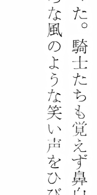
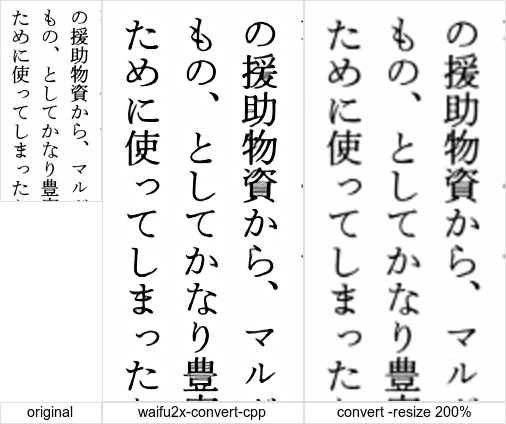

〜2015年6月上旬〜
gifsicleを使えばGIFアニメは高速で作成可能。
ただ元の画像もGIFじゃないとだめなので、変換しておく必要あり。
% gifsicle -V --delay=100 -l0 -o foo.gif foo/*.gif
カートに入れたまま忘れていたQi充電器が400円値下がりしてたので発注。
Micro USBなのでそのまま付け替えるだけでok。
直につなぐよりも充電が速く感じるが、感じるだけだろう。
それにしてもQiで「ちー」と読むんかい。
つまりdeployはS3に置けばいい。ただし、zipにする必要はある。
awscliも更新されているのでコマンドラインからの設定も可能。
ScanSnapで文庫本なら150ぐらいでいいじゃんと
初期の頃は何も考えずにスキャンしてたけど、
タブレットとかどんどん高解像度になるし、
今その画像を見るとちょっと物足りない。
そこでwaifu2xを使えばいいじゃないかと画策。
しかしどれを使えばいいのかわからない。
@rubyciの危機がやってきた。まあ危機というほどでもないが、これで何度目だろう。
考えてみるとgmaneのRSSが一時期止まってしまい、
苦肉の策としてYahoo! PipesからRSSを生成させていただけなので、
戻せばいいだけの話ではある。今はちゃんとRSS吐いてるようだし。
ああ、URLもgmaneに向いてしまうが、これはこれで。
問題は代替のないtenki.jpの気温botのほうだな。こっちはどうにもならないか。
スクリプトがあったので、この通りにしてwaifu2x-converter-cppを用意した。
Ubuntu 15.04でもOpenCVは古くてコンパイルエラーになってしまうので、
OpenCV 3.0あたりをソースから自前でmakeするしかない。
で、これがその結果だ。参考にconvertで-resize 200%した結果も載せる。

順にオリジナル、waifu2x-converter-cpp、convertとなっている。
やはりwaifu2xは素晴しい。convertも頑張ってるが、やはりぼけるね。
Amazon DynamoDBでsortってどうすんだと思ったら、
Queryだとレンジキーでsortされるらしい。
逆順にするにはScanIndexForwardをfalseに。
max/minもこれを利用するしかないわけか。
なんか評判いいのでもうちょっとましな画像を一つ絵で用意してみた。

convertで比較的簡単にまとめられる。
% convert 130-016{,-w,-c}.png -border 1 +append \
\( -gravity center -size 100x20 label:original -size 200x20 \
label:waifu2x-convert-cpp label:'convert -resize 200%' -border 1 +append \) \
-append ~/jarp/images/waifu2x-convert-cpp.png
10点以上購入で15%OFFとかやってるので買ってみるかと思ったら、
送料が310円とか出てきて無料じゃないのかと確認。
1600円以上、またはちょうど3点で送料無料らしい。
3点以上じゃないのね。
まあそういうわけで結局15%OFFはどうでもよくなってしまった。
3点ずつ分割して発注したほうが安くなってしまうし。
ConditionExpressionとか使い出すとDynamoDBの予約語にやたらとぶちあたるんだけど、
いったいどのくらいあるのか調べてみた。
DynamoDBの予約語
% curl -s http://docs.aws.amazon.com/ja_jp/amazondynamodb/latest/developerguide/ReservedWords.html | grep -c '^[A-Z]\+' 573
そんなにあるのか！しかもTIMEとかNAMEとかありきたりなものはだいたい予約語になっている。